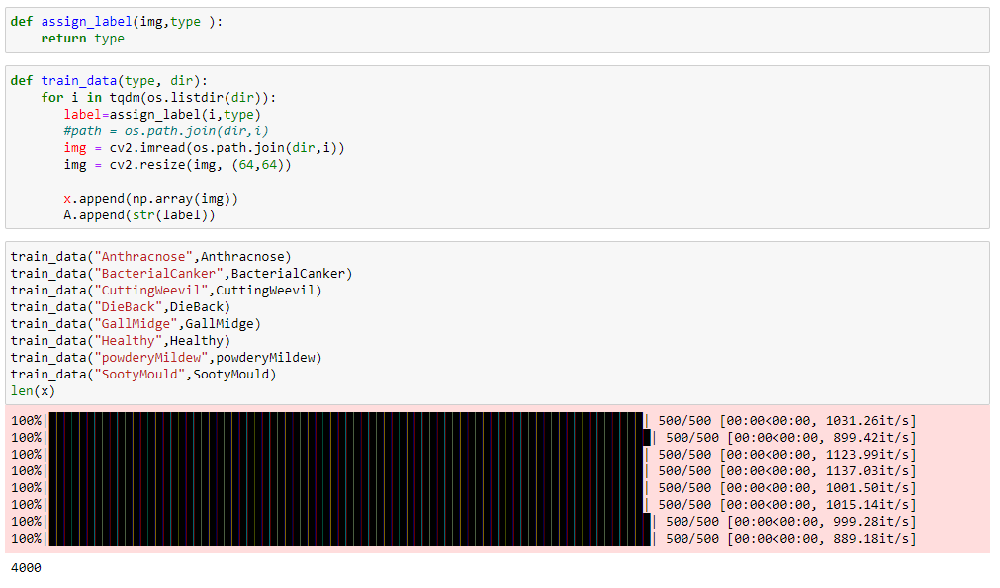

Image Classifier
We will use the test data set of mango leaf disease https://www.kaggle.com/datasets/aryashah2k/mango-leaf-disease-dataset The Convolutional Neural Network (CNN) is a subtype of Neural Networks that is mainly used for applications in image and speech recognition. Here I implementing the Convolutional Neural Network using python. Here, I build an classifier for mango leaf diseases using CNN model. CNN Model: A convolutional neural network (CNN) is an subset of the machine learning. It is one of the various types of artificial neural networks which are used for the different applications and data types. CNN is a network architecture for the deep learning and it is specially used for image recognition and tasks involved in processing the data pixel.
CNN layers:
CNN consists of three layers: convolutional layer, pooling layer and fully connected layer. In every cnn
model it starts with the convolutional layer and ends with the fully connected layer. From the
convolutional layer to fully connected layer, the complexity of the CNN increases. It helps us to identify
the larger portions and complex features of an image until it identifies an object.
Convolutional layer : It is an core building block of an CNN, the majority of computations occurred in
the convolutional layer. The process of an convolution involves a kernel or filter inside this layer. In this
layer image is converted into the numerical values, which allows the CNN model to interpet the image
and extract relevant patterns from it.
Pooling layer:
It is similar to the Convolutional layer, It’s also sweeps an kernel or filter across the input image. But
here, the pooling layer reduces the parameters in the input and results in some information loss. But
this layer reduces the complexity and improve the efficiency of the CNN.
Fully connected layer:
This is where image classification happens in the CNN model based on the extracted features from the
previous layers.
Working principle of CNN Model::
A CNN can have the multiple layers, where each of them helps us to detect the different features of an input image. A filter or kernel will be applied to each image to produce an output which helps to get progressively better and more detailed after every layer. At the each successive layer, the filters will increases its complexity to check and identify features that will help us to represent the input object. The output of the each image from the every layer will become the input to the next layer and the last layer, which is FC layer which helps the CNN to recognizes the images or the object it represents. The Applications of Convolutional neural network are Healthcare, Social media, Automotive, Facial recognition
Import Libraries
The first step will be importing the libraries which are the basic libraries such as numpy, pandas, cv and os. These are the most important things for any machine learning model.
Import dataset
We need to import the data set using the pathlib function. where it will helps us to load the data set.
Exploratory data analysis
To better understand of the data. The dataset has been downloaded from kaggle which consists of approximately 4,000 images. Upon loading the data from the drive we learn that the data consists of 8 classes

Before building our model, we should make some changes to the dataset that would make it ready to fit our model
Encoding
Encoding is a process of converting the categorical data to numerical data. We use the LabelEncoder method it help us to encode the categorical as numerical numbers.
Model Building:
This model architecture is created to make use of pre-trained modules to extract single feature from
the input pictures. Which helps us to classify our images into the 8 classes.
1. The first convolutional layer has 32 filters with the kernel size of 3x3 with equal padding. The
same padding has both the output tensor and input tensor have the same width and height
with activation function elu and then we perform the batch normalization
2.Then we add the another convolutional layer with kernel size of 3x3 with equal padding and
activation function as elu
3.The next step after the convolutional is pooling computation. The pooling computation will
reduce the extension of the data. We can use the module max_pooling2d with a size of 2x2
4.Then we add another convolutional layer with filters 32,64, 128 and 256 with the same
padding and activation function as relu and then we similar as previous steps
5.Then we add dense layer with the 1024 neurons and activation function as elu and then the
final layer with the 8 units. Which provides the probability distribution over the 8 classes

After training our dataset, we got the train accuracy as 77% and the validation accuracy as 87%
Model Tuning:
Model tuning is the experimental process of finding the optimal values of the hyper parameters for maximizing the model performance. Hyperparameters are set of variables where whose values cannot be estimated by the model from training data. These values will control the training process.
Model Building:
The first convolutional layer has 32 filters with the kernel size of 3x3 with equal padding. The
same padding has both the output tensor and input tensor have the same width and height
with activation function elu and then we perform the batch normalization
1. Then we add the another convolutional layer with kernel size of 3x3 with equal padding and
activation function as elu
2. The next step after the convolutional is pooling computation. The pooling computation will
reduce the extension of the data. We can use the module max_pooling2d with a size of 2x2
3. Then we add another convolutional layer with filters 64, 128 with the same padding and
activation function as elu and then we similar as previous steps
4. Then we add dense layer with the 1024 neurons and activation function as relu and then the
final layer with the 8 units. Which provides the probability distribution over the 8 classes.
References
1.https://towardsdatascience.com/feature-encoding-techniques-in-machine-learning-with-pythonimplementation-dbf933e64aa.
2. https://www.javatpoint.com/training-of-cnn-in-tensorflow.
My Contribution
1.I have gone through to references to understand how to implement code using keras and sklearn
modules. Then, I build my cnn model.
2.The main challenge, I was faced is finding the best hypermeters for model tuning to improve my
model performance. Where, I tried building my model using various hypermeters parameters to get
better accuracy score
3.I have attached the training and validation graphs of my model.